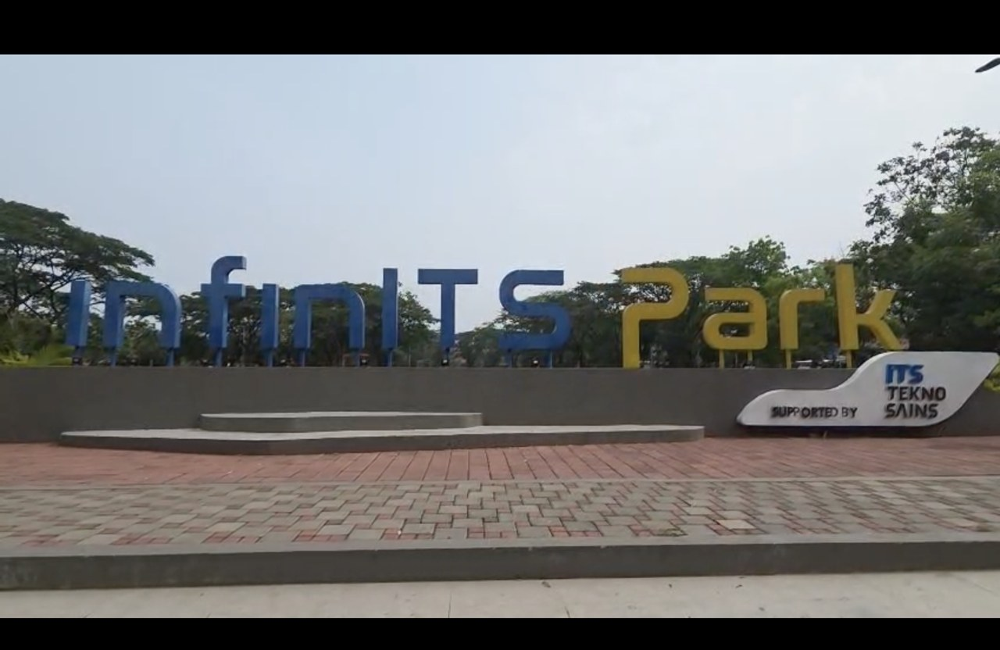

Foto objek asli & hasil canvas WebGL

Kamera:
Video objek asli
Letakkan video asli di assets/video_asli.mp4 (kotak hitam di atas akan terisi otomatis).
Desain tree hubungan antar objek (hierarchical model)
Pohon ini dibuat otomatis dari scene graph yang dimuat dari file GLB. Transformasi anak selalu relatif terhadap induknya.